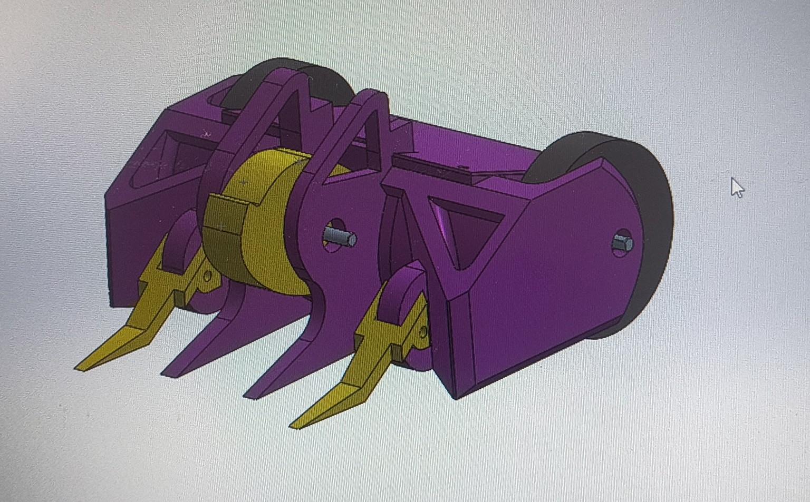
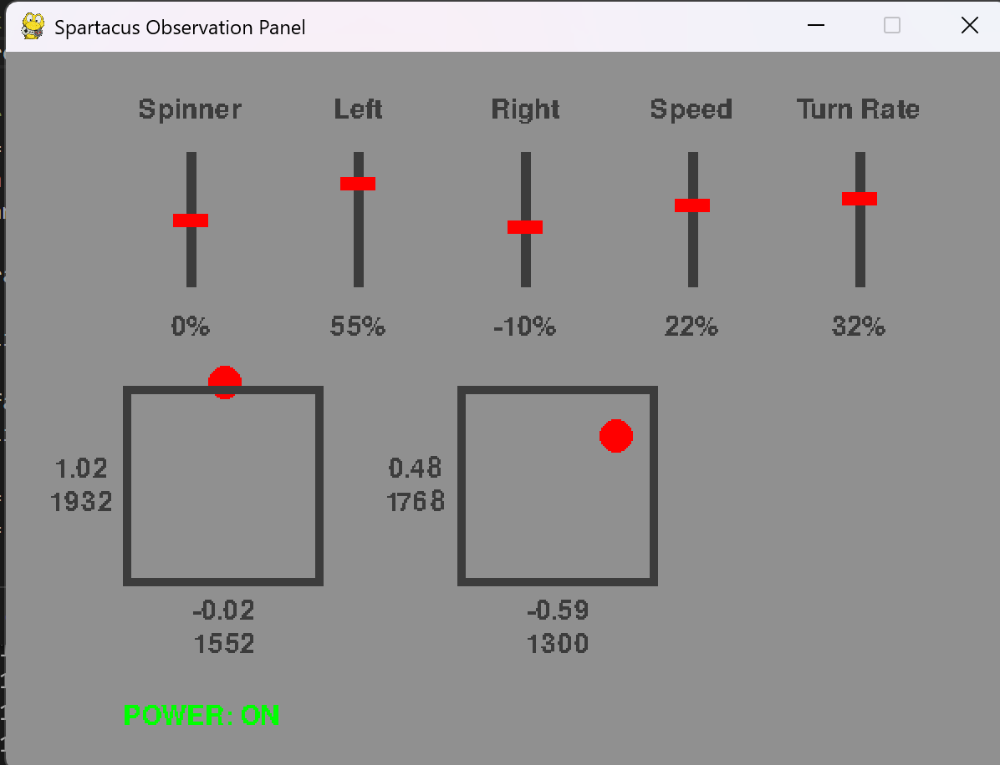

Development and research for the Spartacus combat robot, preparing to compete in the RABID competition early 2027. This summary focuses on my contributions: the electronics and software.

The remote circuit and control logic are complete. The remote control is a DMX5e RC plane controller. While not ideal for combat robotics, I already owned this remote. DSM2 protocal also automatically scans channels to avoid interference, so it meets the requirements of the competition. The PWM signals from the reciever are read by the microcontroller, which then calculated the motor logic. Currently waiting on parts and CAD from the mechanical team to fully assemble the robot. After this, the microcontroller needs to be hooked up to speed controllers and the motors.

The observation panel is vital for visualizing the motor power and calibrating the remote. Its primary purpose is to validate the control systems before adding the motors. The software communicates with the microcontroller using a serial communication pipline. It then visualizes the remote position, drive motor speed and weapon speed it recieved from the microcontroller. The theoretical speed and turn rate of the robot are also calculated based on the drive motors speed. Note that these values are purely theoretical and are not being recorded sensors.